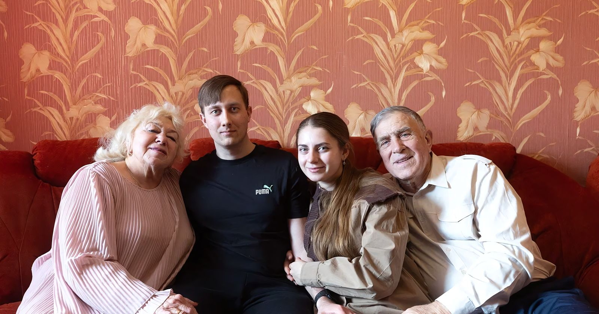
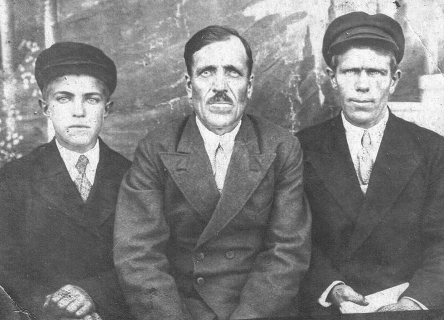
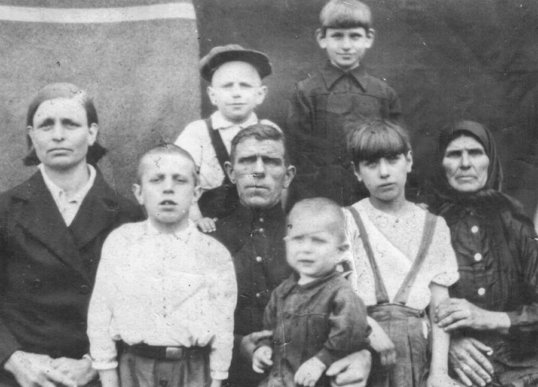
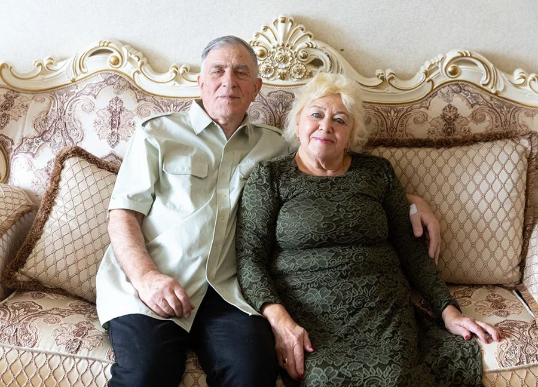
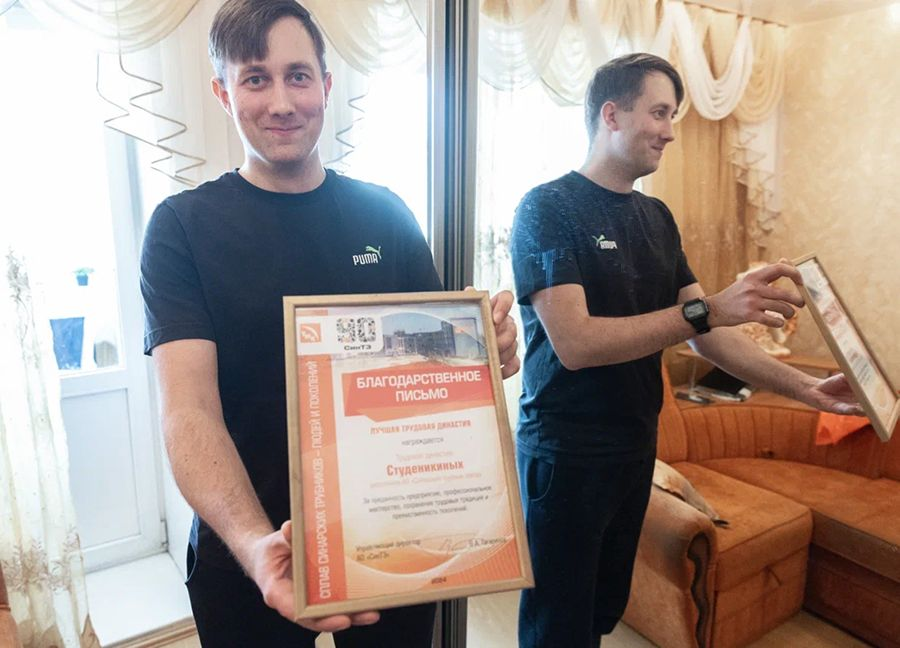

Династия
Студеникиных
Предисловие
Эта история – не просто хроника одной трудовой семьи. Через отдельные судьбы людей проявляется исторический след огромной страны. За плечами трудовой династии Студеникиных более 1100 лет суммарного стажа. Перед нами лишь одна из многочисленных ветвей этого огромного родового древа. И даже в таком фрагменте ясно читается главное: не должности и награды определяют суть этой династии, а внутренняя устойчивость, передающаяся из поколения в поколение. Умение трудиться, держать слово, не ожесточаться и оставаться собой в любых обстоятельствах.
Одни из героев истории – основатель династии Степан Иванович Студеникин и его сын Николай Степанович. Обоих уже нет в живых, но их влияние на формирование ценностей династии огромно. Через призму их непростых и даже трагических судеб понимаешь, каким образом наша страна не потеряла себя в турбулентной зоне истории, став одной из мировых сверхдержав.

Кустов Василий Яковлевич (муж дочери Степана Ивановича – Веры ), Степан Иванович Студеникин (основатель династии), Шарапов Александр Иванович (муж дочери Степана Ивановича – Любови), 1937 годЛюдмила Леонидовна никогда не работала на СинТЗ. Однако со своими уральским характером и трудоспособностью на производстве она точно бы не затерялась. Впрочем, ее судьба и без этого тесно переплетена с заводом.
Внук Юрия Николаевича и Людмилы Леонидовны, Дмитрий Берендеев – единственный из героев этой истории, кто на сегодняшний день трудится на СинТЗ.
Кроме того, среди рассказчиков двоюродный брат Юрия Студеникина, Владимир Шарапов. Он одним из первых стал интересоваться родословной династии Студеникиных.
Третьему поколению уделено особое внимание. Отдельная глава посвящена истории любви Юрия Николаевича и Людмилы Леонидовны. В ней сошлись разные характеры и взгляды на жизнь. Казалось, все было против этого союза, и тем не менее, они вместе уже почти 60 лет.
Четвертое поколение семьи, избравшее иной карьерный путь словно осталось за кадром. Но в лице Дмитрия Берендеева, представителя пятого поколения, династия не просто продолжается, а заново обретает себя, подтверждая: преемственность не прямая линия, а сложный, порой прерывающийся, но находящий способы вновь проявиться путь.
Степан Иванович Студеникин:
«Его в артисты звали, но хозяйство он не бросил»
Годы жизни: 1888-1939. Участвовал в строительстве СинТЗ, в «Синарстрое». Работал в механо-литейном цехе, был токарем, фрезеровщиком, бухгалтером. Рабочий стаж — 8 лет.
Степану Ивановичу пришлось жить в то время, когда привычный крестьянский уклад столкнулся с трагическими событиями большой истории: война, революция, коллективизация. Уже в судьбе Степана Ивановича проступают черты, которые будут характерны и для последующих поколений. Готовность учиться и учить, адаптироваться к обстоятельствам, быть верным себе и своим убеждениям.

Дед Степан родом из села Хавенки Воронежской области. Его семья занималась сбором свеклы. Сдавали ее, получали деньги. Иногда нанимали людей. Хозяйство было приличное, две лошади, сколько-то коров. Мама моя, Любовь Степановна Студеникина рассказывала про деда, что хваткий он был мужик, грамотный. Умел и любил петь: пел в церковном хоре.
Бабушка говорила: так хорошо пел, что приезжали артисты какие-то столичные, с собой звали. Но он не поехал, мол, хозяйство не брошу.
Потом призвали его в армию на Первую мировую войну. В 1916 году во время Брусиловского прорыва дед попал в плен. Отправили его на соляные шахты. Работа там очень тяжелая была. Потом дедушку забрал какой-то бюргер, дед помогал ему в сельском хозяйстве. В 1917 году после революции Степан Иванович вернулся домой. Такой грамотный был, что в 20-е годы ликбез в деревнях проводил.
А нам бабушка по-другому рассказывала. Отец деда отдал его фермеру в Германию, чтобы тот научился, как сельское хозяйство вести и другие науки освоил. Три-четыре года он там провел. Когда вернулся, построил три дома из красного кирпича. Эх, а я ведь там ни разу не был. Родители, брат ездили, а я – нет.
Степан Иванович по возвращении новшество ввел. Раньше ведь как было. В доме одна комната и все. А дед говорит, мол, в Германии даже у ребенка своя комната есть. И построил дом по немецкому образцу. Он понятливый был: предвидел, что их выселять будут.
А бабушка, когда рассердится, наоборот, говорила в сердцах: выслали одних дураков. Я спрашивал: почему дураков-то? Она в пример родственника приводила зажиточного. Он предусмотрительно весь скот, все хозяйство распродал. Знал, что коллективизация будет, и в колхоз идти не хотел. Пришел в сельсовет, мол, я неимущий. С толпой не пойду, поеду в Воронеж учиться, на заводе работать. И вот такие учились в ликбезах, продвигались по служебной лестнице на тех же заводах. А тех, кто умел хозяйство вести, ничего не продавал, но и в колхоз идти не хотел — объявляли врагами народа и высылали.
Мама говорила, что дед все-таки предвидел, как все будет. Хотел временно скрыться. Но пришли на село четыре милиционера. Деревенский народ за деда заступаться стал, милиционеров этих даже побили. Но на следующий день там уже конная милиция была.
Забирали хозяйственных и многосемейных. Бедноту и тех, у кого детей не было, не брали.
Николая, отца Юрия Николаевича тогда только-только поженили. У них с Анной Васильевной как раз дочка Надя родилась. И вот их всех повезли в товарном вагоне. Из вещей почти ничего взять не разрешили. Как рассказывали свекр и свекровь, условия были ужасными. Обращались с ними хуже, чем с животными. Подолгу не давали пить. Туалета как такового не было: общая дырка для всех, женщин и мужчин. В дороге еще несчастье случилось: умерла Надя, совсем еще кроха. Так ее несколько дней хоронить не давали. В конце концов, остановили поезд. Трупик чуть ли не на бегу закапывали. Несколько человек сбежали тогда воспользовавшись остановкой.
Дед потом всю оставшуюся жизнь себя за смерть Нади винил. Мол, если бы все распродал, может, обернулось бы все по-другому.
А свекровь восемь лет после смерти Нади не рожала.
Доехали они до Каменска. Высадились на станции Синарская, которая до сих пор существует. Туда приходили поезда с переселенцами, которые начинали обустраивать поселок и строить завод. Прапрадедушка, по сути, был одним из тех, кто забивал первые колышки для строительства нашего завода.
Людей фактически в лес высадили, выживайте, как хотите. Дедушку выбрали главным. Потому что он умным был и у него все в руках горело, как рассказывала бабушка. И плотником он был неплохим, и столяром, и слесарем. Дед приказал землянки копать, воду набирать. В лесу грибы собирать запретил. Не знаете, мол, какие съедобные, а какие нет. Можно, говорит, только ягоды: малину и землянику.
Параллельно с заводом люди строили себе бараки. С нарами и печками. А строились-то тесно. На каждом квадратном метре – по человеку. Детей еще у всех помногу было. Так и окрестили поселок – Шанхай. Его в народе по-прежнему так называют. Теснота и бедность. Когда у нашего соседа умер ребенок, он такую фразу сказал: мол, как выживать, если на кладбище больше метров дают?
А разживаться не давали. Вот есть отведенная территория, за нее нельзя: дальше охрана.

{kind=link}
{kind=link}
{kind=link}
{kind=link}
{kind=link}
{kind=link}
{kind=link}
{kind=link}
{kind=link}
{kind=link}
{kind=link}
{kind=link}
{kind=link}
{kind=link}
{kind=link}
{kind=link}
{kind=link}
{kind=link}
{kind=link}
Свекровь рассказывала. У нее был родной брат, он служил на фронте. Так ей даже не разрешили родного брата навестить. Потому что за территорию никого не выпускали.
Устроиться можно было только на завод. Дед там сначала работал токарем, потом фрезеровщиком.
Со слов матери, он упорным был. Какое дело ни возьмет, всегда до конца доводит. В какой-то момент на заводе его в отдел технического контроля перевели, трубы проверять.
{kind=link}
{kind=link}
{kind=link}
Да нет же, бухгалтером он был. До 37-го года в этой должности проработал. Общий стаж восемь лет. А потом раком заболел. Вот в тот момент его и объявили врагом народа. Когда на черном воронке за ним приехали, он уже при смерти был. Еще несколько дней пожил и умер.
Бабушка рассказывала, когда Степана Ивановича с бухгалтерской должности сняли, то директору тоже досталось. За то, что пристроил врага народа. И вот это клеймо еще долго давало о себе знать. Да что далеко за примером ходить. Когда меня приказом директора завода перевели на должность мастера в новый цех, пришел я к начальнику, там другие еще стояли. И один начальник смены говорит: «А как отпрысков врагов народа еще и в мастера берут?» А я при всех отвечаю: «Хоть не дураков». Начальник цеха потом говорит, мол, через пять минут ко мне зайди. Я зашел, а он мне: «Правильно ты все, Николаич, сказал».
Тяжело было, неприятно, но бабушка говорила, что нельзя озлобляться. Что все, что ни делается, то к лучшему. Что если бы их не переселяли, то и некому заводы было бы строить. А не было бы заводов, не было бы победы над Гитлером. Если же будем озлобляться, только хуже себе сделаем.
Деда только в 1947 году реабилитировали. Каждый год 30 октября прихожу к памятнику репрессированным, кладу две гвоздички. И я не один такой. Не меньше 30 человек нас собирается…
Николай Степанович Студеникин.
«Будешь жить честно — будешь спать спокойно»
Даты жизни: 09.06.1911 — 05.06.1985. Работал бригадиром отдела технического контроля (ОТК). Участник трудового фронта. Награжден медалями «За трудовую доблесть», «За трудовое отличие». Трудовой стаж – 35 лет.
Если бы нужно было описать жизнь Николая Степановича одним словом, то это было бы слово труд. По воспоминаниям родных, он даже отдыхал лишь занимаясь каким-нибудь делом. Но главное, что, будучи погруженным в бесконечные заботы, Николай Степанович не ожесточился, никогда не жаловался на судьбу. В памяти детей он остался прежде всего добрым, любящим отцом.
{kind=link}

Студеникина Анна Васильевна (мама Юрия), Студеникин Владимир (брат Юрия), Николай Степанович (отец Юрия). На руках: Юрий Николаевич, Валентина Николаевна (сестра Юрия), Студеникина Варвара Васильевна (мать отца Юрия). Cверху: Студеникин Борис (брат Юрия), Студеникина Галина (сестра Юрия), 1947 год
Как мне рассказывали, дядя Коля боевым был. В свои 18 водил мужиков в соседние деревни на кулачные бои. Заводилой в таких делах был. Его и женили пораньше, чтобы он остепенился и эти забавы бросил. Он бил, ну и его били.
Я про это не слышал. Но могу сказать, что бабушка отца любила до безумия. Как дед умер, так отец за главного остался. У него ж на попечении не только свои дети были, но и младшие братья и сестры. Бабушка ему сказала: ты самый старший остался. Приходилось отцу с утра до вечера работать. Не пил, не курил. А иначе как хозяйство держать. И не только хозяйство. Жизнь заставила его деньги зарабатывать. Строят дом — он туда слесарем приходит, новый завод – он сторожем нанимается. Удобно, что все рядом было, всегда можно домой вернуться и скотину покормить.
Или ведро смородины наберет и продаст. Такой «бизнес».
Когда вместо землянки нам две проходные комнаты с соседями – 27 квадратных метра на семь детей – в доме дали, он переезжать из землянки отказался. Ну как же, а кто со скотиной помогать будет? Вы, говорит, переезжайте, только с покосами помогайте.
Отец как на покос соберется, всегда яйца с собой возьмет, сало, квас. И вот косим мы: отец, братья Борис и Володя. Все друг за другом. А Боря, который всю жизнь шофером проработал, иной раз как бросит косу и руками всплеснет, дескать, зачем ему этот покос. Молоко все равно не пьет, а комары заели. Володя тогда футболку снимет, а у него вся спина искусана. По ней ладошками проведешь, красные кровавые следы остаются.
Папа все время приговаривал: «Пусть лучше лишнее останется, чем не хватит». На корову нужен стог, так накосим три. Но люди же завистливые. Сосед был один, пожаловался в НКВД. Мол, один тут три стога косит. Как так, разберитесь. Вызвали отца. Так и так, Николай Степанович, заявление на вас написали. А с ним лесник ходил. Он и говорит: да Николай Степанович не по три стога, а по шесть косил. Три мне отдавал, чтобы я ему косить разрешал. А вообще, вы ничего не делайте, просто приходите и посмотрите, как он работает. Его в отличие от других никто не кусает. Ничто и никто ему не мешает. Косит себе и косит.
На него всегда можно было положиться. Вот, например, стадо коров. Сто голов наберется. Пастуха не было, пасли по очереди. Кто-то не может, так он всегда вызовется, всех выручит. Все ему очень доверяли.
Отдыхать он вообще не отдыхал. Невозможно представить, чтобы без дела оставался. Любимое занятие у него было за скотиной ходить. Чем-то занят и заодно на природе. Нас детей он постоянно старался к работе привлечь. Давай, Юрка, пойдем, матери две грядки вскопаем. А грядки длинной метров 10-12, метр шириной. Морковь там такая сочная всходила. Соседи, как всегда косо посматривали, шептались: опять Анна Васильевна сажает с каким-то наговором. Один из соседей, дед Иван, так и спрашивал у матери: «Анюта, ты поди опять чего-то там нашептала, смотри какая морковь у тебя взошла». А она отвечала: «Так землю надо удобрять, поливать, ухаживать за ней».
А как огурцы, помидоры спели! Отец какой-то материал принес, оборудовал что-то вроде теплицы, чтобы, если морозы ударят, саженцы выстояли. И всегда помидоров столько было! Если скажу, что ведер 25 собирали, то не ошибусь. А сколько яблок. Словами не передать. Отец очень яблони любил. Посадил шесть штук. Помню, как маленькие, хиленькие саженцы принес. Выкопали под каждый яму. На дно раскрошил красные кирпичи, потом туда навоз с перегноем, все землей засыпал. Пап, говорю, у тебя такой корешок маленький, а ты вон какую ямищу раскопал. А он отвечает: зато земля хорошая будет. И такие яблони выросли: весь квартал яблоками с них питался. «Белый налив», «Ранеточка», какие-то зеленые сорта. Родня приезжала, так мешками таскала.
На рыбалку с ним, если выберешься, то изредка. Он сплетет «морду» из прутиков, аккуратно закинет. Кто найдет, тот найдет. А чего ты, говорю, так редко плетешь. Да это, чтоб гольяны выплывали, а караси оставались. Такая рыбалка с отцом была.
{kind=link}
{kind=link}
{kind=link}
{kind=link}
Дядя Коля очень добрый был, помогал всем. Но вообще вся порода студеникинская такая. В то время все очень дружные были, всегда друг другу на помощь приходили. Все ж коров держали, скот. Надо кому-то сено привезти, накосить, все друг дружке помогали. Что-то вдруг случилось, надо кому занять денег – всегда подставляли плечо. Безоговорочно. Никто ни с кем не ругался. Я такого точно не припомню. Зато на праздники-то как собираться любили. То в одном доме, то в другом. Нас детей бабушке отдавали и гуляли!
От себя скажу: свекр мой – удивительный человек. Таких мужчин я никогда в жизни не встречала.
Он ее любил очень, дочкой называл.
Я про трудолюбие Николая Степановича свою историю расскажу. Мои родители как-то посадили картошку. Уже осень наступает. А им эта картошка и не нужна особо как будто. Свекр спрашивает: «Что там, родители-то картошку выкопали? Нет? Так давай, садимся на велосипеды, поехали копать». Приедем, копает, а я молодая за ним не поспеваю.
И все эти покосы, сельское хозяйство — параллельно с работой на заводе. А заводу он больше 35 лет отдал.
С детства помню, как отец уходил на работу. Бабушка нас выведет, мол, провожайте. Он всех поцелует, выйдет, рукой помашет. И столько доброты у него в глазах. Когда в 11-м классе учился, на практику ходил на завод. Пришел отца проведать как-то. И не узнал его. Только зубы белые, а лицо-то все черное. Пап, ты же рассказывал, что в отделе технического контроля работаешь, что работа у тебя легкая. А там такие трубы грязные, чугунные отливали. Пыль стояла, что людей не было видно. У них даже профессиональная болезнь выработалась — силикоз. И он мне говорит: ничего, это я еще чистый. Пап, да какой ты чистый. Мне еще перед одноклассниками неудобно было, что отца не признал. И это он еще бригадиром был.
На протяжении всей работы на заводе отца постоянно награждали. Все время какие-то грамоты приносил. Мама тоже на заводе работала: шишельницей на изготовлении стержней, которые потом устанавливались в форму труболитейного цеха. Потом она травмировалась, в детском садике работать стала. У нее стаж 13 лет. Удивительно мне, как они за все это время не осерчали на жизнь.
Отец всегда приговаривал. Почему от государства надо что-то требовать? Ты возьми и заработай. У тебя земля-кормилица под ногами. Возьми землю и корми. Такие представления у него были о жизни. И еще любил говорить: «Будешь жить честно, будешь спать спокойно».
В 55 лет отец вышел на пенсию. На следующий день начальник с завода звонит: Николай Степанович выходите на смену! А он ему отвечает, мол, не могу, скот у меня, покос начинается. Завод тогда три стога сена привез, лишь бы отец вышел на работу. В первый раз за 40 лет помогли ему по хозяйству тогда.
Вот так он работал. Спрашиваю как-то, пап, куда деньги-то девать. А он отвечает: «Пусть сейчас не пригодятся, но будут. Когда умер, пошли с матерью деньги забирать, которые отец накопил. Надо же достойно похоронить». Смотрим, а там 30 тысяч рублей. А тогда за 6 тысяч автомобиль купить было можно, «Жигули». То есть папка на пять машин накопил!
Потом еще люди спрашивали. А что ж он детям по дому не купил. Не мучились бы тогда. Да вот почему. Когда старший брат у меня женился, отец пошел просить расширения жилплощади. Шел 61-й год. А там весь президиум заводского комитета — больше десятка человек. Вернулся отец пьяным. Оказалось, что там на заседании один выступил: «Вы не забывайте, что он враг народа». Председатель завкома отца привел в свой кабинет и налил ему коньяка: «Пей, сколько хочешь. Без закуски».
Им потом дали вместо этих 27 метров, на которых они ютились, две комнатушки. Да какие комнатушки, комнату и коридор, по сути. Кошмар.
Очень хорошим человеком был свекр. Когда он умер, вся школа на меня таращилась. Я неделю опухшая, вся заплаканная ходила. Все говорили: «Подумаешь, ерунда какая, свекр умер». А я любила его очень.
{kind=link}
{kind=link}
{kind=link}
{kind=link}
Людмила + Юрий. История одной любви.
Юрий Николаевич и Людмила Леонидовны сочетались браком 21 января 1967 года. Двое детей, трое внуков, один правнук, одна правнучка.
«Любовь - это трудная ежедневная работа, которую не каждый выдержит», — учит своих детей Людмила Леонидовна. А ведь их с Юрием Николаевичем история тому наглядная иллюстрация. Все было против этого брака, а они вместе уже почти 60 лет. «60 лет совместной мученической жизни», — смеются супруги. Как бы там ни было, оба признают: всего, что у них есть они добились только благодаря друг другу.
{kind=link}

Людмила и Юрий
Как мы с Юрием Николаевичем познакомились? Однажды под Новый год подружка выходила замуж за его одноклассника. На свадьбе и познакомились. Друг другу не понравились. Но я сразу обратила внимание, насколько он порядочным молодым человеком оказался. Так получилось, что у меня с собой ключей от квартиры не оказалось, а родители сами в гости ушли. А свадьба в двухкомнатной квартире, человек 70 там набилось, остаться негде. И он говорит, мол, пойдем ко мне. А он тогда жил с сестрой в двух комнатах, одна из которых проходная. И я к нему пошла. А мне 17 лет, представьте себе. Говорит, ложись здесь, у сестры. И ничего такого, никаких намеков.
А потом я как-то увидела его на остановке, подвыпившего. На улице минус 30. Он стоит, мерзнет, без перчаток. И вдруг такая жалость к нему в душе появилась. Поздно, автобусы не ходят и вот я — девчонка в капроновых колготках и в сапожках повела его домой на Шанхай. Минут 40 идти. Так в его родительском доме в первый раз оказалась. Бедность, которую увидела, меня просто поразила. И так жаль его стало. На следующий день пошла и купила ему перчатки. Как сейчас помню, коричневые такие.
Начали как-то общаться. А я ж училась, в библиотеке пропадала день и ночь. И его потихоньку читать заставляла. И он потихоньку стал за мной ходить, приходить к нам домой.
Родители были в ужасе. Мне 18 лет, ума никакого. А я же любимая доченька, меня все опекали. Бабушка из Ленинграда была приставлена для воспитания. Ну как так можно. Мама говорила: «Людочка, я куплю тебе золотые часы, только замуж за него не выходи». А она заведующая ЗАГСом была. Приходит домой за три дня до свадьбы: «Ничего не будет, я тебя не отдам. Ты за кого собралась? Он же такой страшный. Подумай, какие у тебя дети будут. Опомнись, Бога ради!» Отвечаю: «Мам, я его исправлю, поживу с ним и разойдусь. Но исправить его надо!»
А у меня дома от Люды все были в восторге. Отец говорил: «Если вы разойдетесь, я все равно ее больше любить буду». Она тогда еще конферансье была, вела концерты. Мои ходили, смотрели.
{kind=link}
{kind=link}
{kind=link}
{kind=link}
{kind=link}
Я пионеркой из драмкружка не вылезала. Моя стихия. Меня как-то заприметили, стали приглашать вести концерты. У нас же тут летная часть: все время у летчиков выступала. Столько парней знакомых было. Летчики – хорошие ребята. Но представить с кем-то из них свою жизнь я не могла. А если полетит и разобьется? Моя жизнь закончится тут же.
Я особо ни на что и не надеялся. У нее и ухажеры были.
Жених был! Инженер с дипломом, с квартирой двухкомнатной. До сих пор письмо его лежит. Он бросил диплом в Барнауле, все бросил, приехал ко мне в Каменск.
Наверное, это все ее жалость ко мне.
Жалость? Ну, жалость. А любовь появляется с годами. Вот сейчас пишем сочинение в девятом классе – что такое любовь. Им нужно выучить определение. Любовь – трудная, душевная работа, которую не каждый выдержит.
В школе вот рассказываю, как выбрать себе жену или мужа. Как Лев Николаевич сказал, важны три качества: доброта, простота и правда. Если эти качества есть, надо брать. Какие женщины были у гениев наших, у Пушкина, у Толстого? Не самые красавицы же. Вот та же Наташа Ростова с большим некрасивым ртом. Татьяна Ларина тоже не красавица. Душа должна быть. А молодежь сейчас от этого далеко. Сначала машина, деньги, а потом все прахом идет.
Так вот, вспоминаю, как Юрины родители свататься пришли, Николай Степанович и Анна Васильевна, а с ними и старший брат Юры, Володя. Люди сельского труда, скромные очень. А на мне, как сейчас помню, белый сарафан с красными огромными маками, сзади какая-то лента и бант. Мама папе говорит: «Леня, сегодня придут Юрины родители знакомиться, ты встань». А он: «Тебе сказал, сейчас возьму ружье и всех перестреляю!» «Лень, его родители тоже не хотят, чтобы он женился, так же как мы, они-то причем?» «Нет, я их перестреляю!» Но уговорили его. Встал.
Пришли сваты, покушали, ушли. Папа три ночи разговаривал со мной, чтобы я передумала замуж выходить. Сначала институт закончи, потом подумай, где жить. Жили в итоге, в трехкомнатной в хрущевке. В одной – родители, в другой брат, который ревел, что Люда из семьи ушла. А мы, молодые, в проходной комнате, где телевизор, где все едят. Но мы были счастливы в доме моих родителей. Юру очень полюбили.
{kind=link}
Хотя Ксения Никитична, которая тетя Люды, вредная ко мне была до самой своей смерти. Тебя, говорит, никто не хотел в этой семье. А ты, смотри какой настырный. Чуть ли не в свинарнике вырос, а все равно пролез! Или: «Юра, как ты так жил, что не в те сани сел. А я ей: так сел уже, Ксения Никитична, ничего страшного!»
Мы уважение друг другу через всю жизнь пронесли. А ведь он сильный, очень сильный. Лавку на остановке мог из бетона выдрать. Но меня ни разу даже пальцем не задел. А все потому, что по-настоящему сильный человек себе этого не позволит. Хотя за 60 лет совместной жизни всякое произойти может. Я ведь гром, молния и ливень. Вроде много мне не надо: чтобы работа была и семья. А все остальное неважно. Но все должно быть по-моему! И потом учителя в семье тоже вытерпеть надо. Поражаюсь, как Юрий Николаевич смог.
{kind=link}
{kind=link}
{kind=link}
{kind=link}
Вся жизнь за партой, считай, прошла. Но я вот что скажу. То, что я дожил до этих лет, что столько проработал, это только благодаря ей.
Мой муж – это мой воздух. Дети вырастают, у них уже своя жизнь. А мы друг с другом уже навсегда.
{kind=link}
Эпилог
Герои этой истории не стремятся подводить итоги или формулировать выводы. Их жизнь не укладывается в короткие определения. Они не расставляют акценты намеренно, не пытаются объяснить себя или подчеркнуть значимость прожитого.
Тем не менее, «секрет» династии Студеникиных находится на поверхности. Он в честном отношении к труду, в уважении к людям, в умении оставаться верным своим принципам независимо от обстоятельств. Но главное, что дает силы нашим героям – безусловная ценность семьи, которая не требует доказательств и не зависит от времени.
Эти простые истины не оформлены как правила. Они живут в поступках, в интонациях, в том, как принимаются решения. Династия продолжается, пока ее представители держатся этих оснований. Именно поэтому у этой истории нет финала: ее продолжение не в словах, а в жизни, которая идет дальше.
{kind=link}

Описание фото